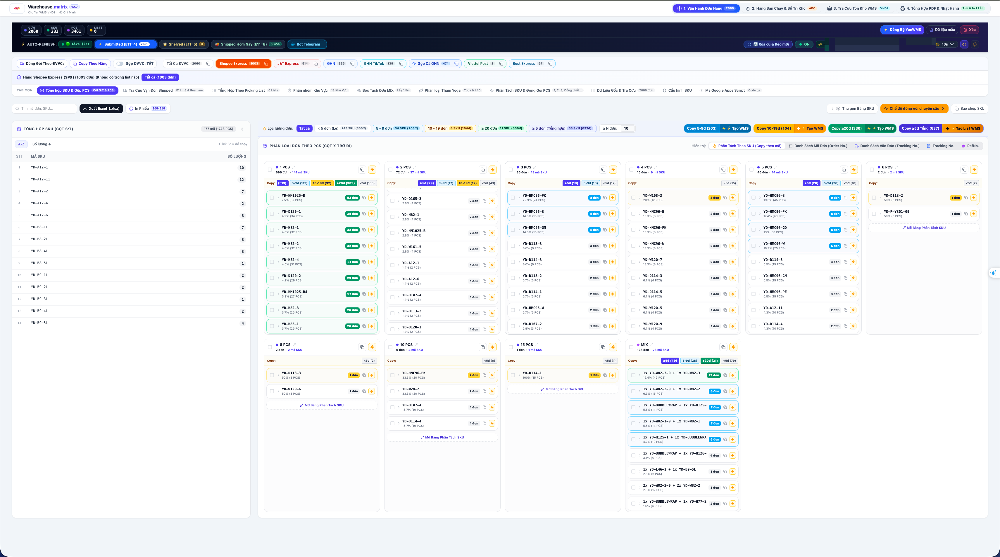

WMS Trung Quốc đủ các bước cơ bản nhưng tạo picking list rất nhiều thao tác và không phân loại được đơn theo cách kho cần, không biết đơn hoả tốc, và mất dấu đơn sau khi bàn giao ĐVVC. Quản lý kho GIP phải tự làm một tool riêng (Warehouse.matrix) lấy dữ liệu qua API của WMS để chia đơn, tạo list và in. Bài toán lớn nhất của kho là tạo picking list + sắp xếp hàng sao cho picker – phần lớn là lao động phổ thông, thời vụ – nhặt nhanh nhất.
| Loại đơn ở bàn đóng gói | Thao tác |
|---|---|
| 1 SKU, 1 cái | Quét SKU 1 lần → in waybill ngay. |
| Cùng SKU, ≥ 2 cái | Quét đủ số lần → in waybill. |
| Nhiều sản phẩm / mix | Hệ thống gợi ý đơn đó có bao nhiêu sản phẩm, quét đủ rồi in. |
WMS không phân biệt đơn hoả tốc; shipper đến mới đi tìm → mất thời gian, đơn bị huỷ nhiều.
Nhanh hơn nhưng không còn bước quét kiểm hàng – rủi ro đóng nhầm.

| Điểm yếu | Hệ quả | Kho đang xử lý | Nguồn |
|---|---|---|---|
| Tạo picking list nhiều thao tác, lọc không đúng nhu cầu | Không in được theo nhóm đơn đồng chất / cùng SKU nhiều cái / mix / khoảng PCS; mất thời gian, kém hiệu quả. | Tool chia đơn theo PCS, SKU, số đơn rồi tạo list qua API. | |
| Không nhận biết đơn hoả tốc | Shipper đến mới tìm đơn, chậm, tỷ lệ huỷ cao. | Tool tìm đơn hoả tốc, in waybill và đóng ngay. | |
| Mất dấu đơn sau bàn giao ĐVVC | Không biết đơn đi tới đâu. | Cào trang tracking của từng ĐVVC; một số hãng chặn khi gọi nhiều. | |
| Không có mã giỏ | Packer phải nhập mã picking list. | Dùng mã picking list thay mã giỏ. | |
| Không hỗ trợ người mới | Picker không để ý location, người mới không biết hàng trông thế nào. | Dựa vào người cũ nhớ mã. | |
| Không linh hoạt theo số người | Quản lý phải tự chia việc mỗi ngày theo người có mặt. | Tự chọn tiêu chí, tự chia list. | |
| Đơn huỷ khi đang nhặt | Hàng phải đưa về kệ bằng tay, hệ thống không theo dõi. | Làm tay. | |
| Hàng giữa kệ và bàn đóng gói không truy được | Nhặt không quét: đóng gói thấy thiếu không biết do lấy thiếu, nhầm SKU, rơi hay kệ hết; không gắn được người chịu trách nhiệm. | Phát hiện ở bàn đóng gói, xử lý tay. | |
| Tồn theo vị trí lệch dần | Không trừ tồn vị trí lúc hàng rời kệ; lệch tích luỹ tới khi kiểm kê rồi nắn bằng file, mất dấu vết. | Nắn tồn bằng import file / Batch Adjust Inventory. | |
| Chia kiện theo ĐVVC dễ nhầm | Bỏ nhầm rổ → ĐVVC A cầm đơn của B; thường chỉ biết khi bị trả lại hoặc khách khiếu nại. | Chia bằng mắt, không có bước kiểm. | |
| Nhân viên khó dùng phần mềm | Giao diện dày đặc, nhiều thao tác. | Quản lý làm thay phần khó trên tool. |
Mục tiêu vận hành kho: bàn giao ĐVVC đúng hạn, tối ưu chi phí vật liệu và nhân công. Bước tốn thời gian nhất là đi nhặt, và tốc độ nhặt phụ thuộc vào cách tạo picking list và cách sắp xếp hàng trong kho.
| Nhu cầu | Mô tả |
|---|---|
| 1. Tạo picking list linh hoạt | Chia đơn theo loại: đồng chất (1 SKU 1 cái), cùng SKU nhiều cái, khoảng PCS (vd 2–10 cái cùng SKU), mix; theo ĐVVC; theo số đơn mỗi SKU; theo khu. Quản lý chọn cách chia theo vận hành từng ngày. |
| 2. Linh hoạt theo số người | Ngày mai có bao nhiêu người thì chia việc tương ứng, không cố định. |
| 3. Người mới hiểu ngay | Hiện ảnh sản phẩm khi nhặt; quy trình đơn giản, nhìn là làm được. |
| 4. Sắp xếp kho theo lượng đơn | Hệ thống đề xuất vị trí đặt hàng dựa trên số lượng đơn xuất (hàng bán chạy gần khu đóng gói…). |
| 5. Bản đồ kho & đường đi | Vẽ map kho và đường đi của từng picking list để picker đi ngắn nhất. |
| 6. Xử lý nhanh đơn gấp | Đơn hoả tốc nổi lên ngay, in và đóng ngay; đơn đồng chất in waybill hàng loạt. |
| Khâu | WMS 创智云仓 (GIP vận hành) | FFM WMS | Nhận định |
|---|---|---|---|
| Kiểm hàng | Không dùng tính năng kiểm kê riêng: đếm tay tại kệ, tự so với tồn, không khoá kệ; lệch thì tạo phiếu xuất / nhập kho để bù, hoặc nhập tồn từ file, điều chỉnh tồn hàng loạt. | Phiếu kiểm kê #468 đang làm: phiếu SC, khoá kệ, duyệt chênh lệch rồi mới chỉnh tồn, đồng bộ POS; đếm trên mobile ở #469. Chưa có màn cập nhật tồn bằng file. | FFM đang làm |
| Hàng hoàn | Không có luồng riêng: kiểm tay, hàng tốt nhập như hàng mới (phiếu nhập loại hoàn) rồi xếp kệ; hàng hỏng xử lý ngoài hệ thống. Không gắn với đơn gốc. | Màn Return QC: quét mã vận đơn tạo phiếu hoàn gắn đơn gốc → quét tote → Good / Not good, có video; Good lên kệ, Not good vào vị trí damage. | FFM tốt hơn |
| Khái niệm "lô" | Lô gắn với thùng (đơn vị đóng gói vật lý); tồn theo lô xem theo vị trí, pallet, thùng, ngày xếp kệ, tuổi kho. | Lô = từng dòng phiếu nhập (đợt nhập, có hạn dùng), dùng cấp hàng theo FIFO / LIFO / FEFO; không có thùng, pallet, tuổi kho. | Cùng chữ, khác nghĩa |
| Điểm | WMS 创智云仓 + tool GIP | FFM WMS hiện tại | Nhận định |
|---|---|---|---|
| Chia đơn tạo picking list | WMS có lọc cơ bản (1 SP / cùng SKU / nhiều SKU, loại đơn, kênh, khu) nhưng nhiều thao tác; tool GIP chia chi tiết theo ĐVVC, khoảng PCS, SKU, số đơn/SKU, mix, khu. | Hệ thống tự gom: hoả tốc → sàn → thường, hoặc theo SKU chủ đạo; tối đa 20 đơn/list; không chọn / bỏ từng đơn. Code FE đã có modal chọn đơn tay CreatePickingListModal nhưng chưa gắn vào màn . (wms-inbuild/logic.md BR-WMS-006, C.1) | FFM thiếu tiêu chí |
| Đơn hoả tốc | WMS không biết; tool GIP tự tìm. | Có cờ is_express, lô hoả tốc tách riêng và đứng đầu danh sách trên mobile. (C.1) | FFM tốt hơn |
| Sau bàn giao ĐVVC | Mất kết nối, phải cào trang tracking. | Tích hợp ĐVVC: trạng thái cập nhật qua webhook / crawl theo từng hãng. (20_Integrations/carriers.md) | FFM tốt hơn |
| Mã giỏ | Không có, dùng mã picking list. | Tote có mã, quét Tote khi nhặt và đóng gói. (A.3) | FFM tốt hơn |
| Nhặt hàng | Cầm phiếu giấy, không quét vị trí / sản phẩm – nhanh. | Quét tote → vị trí → sản phẩm trên mobile, mỗi lượt quét trừ tồn theo vị trí và ghi sổ công việc (ai, ở đâu, bao nhiêu) – chậm hơn nhưng truy vết được. | Đánh đổi tốc độ ↔ truy vết |
| Linh hoạt theo số người | Quản lý tự chia mỗi ngày. | Web assign + nhân viên tự nhận list trên mobile (self-claim). (BR-WMS-006) | FFM có một phần |
| Đóng gói theo SKU, gợi ý đơn | Quét SKU → gợi ý đơn → in waybill. | Quét Tote → quét SP → quét waybill để chốt; đơn đầu hàng đợi, chưa có chế độ quét SP tự ghép đơn. (BR-WMS-009) | Khác cách |
| Đóng nhanh không quét | In waybill hàng loạt, nhìn waybill mà đóng. | Bắt quét đủ (anti-fraud), không có chế độ bỏ quét. (BR-WMS-010) | Đánh đổi tốc độ ↔ kiểm soát |
| Ảnh SP khi nhặt | Không có (theo kho). | KB chưa đề cập. | Cần hỏi dev FFM |
| Sắp xếp kho / ABC / map / đường đi | WMS không có; tool GIP có tab ABC. | Khi xếp kệ đã có gợi ý vị trí (vị trí đang chứa đúng SKU, chưa đầy, trống nhiều xếp trước) nhưng không xét độ bán chạy, khoảng cách, SKU mới không có gợi ý . Khi nhặt gợi ý "kệ nhiều hàng nhất trước", không theo đường đi; chưa có sơ đồ kho. (BR-WMS-007; overview §7) | FFM có một phần |
| Kệ pick / storage / damage | Có 3 loại; cảnh báo hết kệ pick. | Có storage_type pick / reserve / damage…; chưa có cảnh báo châm hàng. (A.1) | FFM thiếu cảnh báo |
| Nhập nguyên pallet không QC | Có. | Mọi phiếu nhập qua QC. (BR-WMS-001, 003) | FFM thiếu |
| Đơn huỷ khi đang nhặt | Báo lỗi ở bàn đóng; trả kệ bằng tay. | Packing chặn đơn cancel; luồng cất hàng về kệ đang làm #466. | Đang làm |
| # | Nhóm | Nội dung | Ưu tiên |
|---|---|---|---|
| 1 | Tạo picking list theo tiêu chí | Chia đơn theo loại (đồng chất / cùng SKU nhiều cái / khoảng PCS / mix), ĐVVC, khu, số đơn mỗi SKU, theo shop; lưu bộ tiêu chí dùng lại; số đơn mỗi list do kho đặt; thêm / bỏ từng đơn (tận dụng CreatePickingListModal); gợi ý gom đơn có sản phẩm nằm gần nhau. | Must |
| 2 | Đóng gói đơn đồng chất nhanh | Quét SP tự ghép đơn và in waybill; in waybill hàng loạt cho list đồng chất – vẫn giữ kiểm soát (vd quét 1 lần đại diện) thay vì bỏ hẳn. | Must |
| 3 | Hỗ trợ người mới khi nhặt | Ảnh sản phẩm + vị trí trên app nhặt; thứ tự đi nhặt theo vị trí. | Should |
| 4 | Sắp xếp kho theo lượng đơn | Phân loại ABC theo tốc độ bán, đề xuất vị trí; về sau là map kho và đường đi của picking list. | Should |
| 5 | Kệ pick / storage + cảnh báo châm hàng | Cảnh báo hết kệ pick, tạo việc chuyển hàng từ storage. | Should |
| 6 | Nhập nguyên pallet / thùng | Cho phép bỏ QC theo cấu hình, chia pallet sang pick / storage; nhận theo thùng (quy cách thùng, mã vạch thùng – quét 1 mã cộng cả thùng). | Could |
| 7 | Chế độ pick theo kho | Mỗi kho chọn Quét đầy đủ (mặc định) hoặc Pick theo phiếu (bỏ quét vị trí, sản phẩm khi nhặt; vẫn quét tote). Kèm kiểm bù ở đóng gói: thiếu hàng phải chọn lý do, báo cáo chênh lệch theo danh sách. Đáp ứng nhu cầu tốc độ / linh hoạt của kho đông thời vụ. | Must |
| 8 | Gợi ý rổ bàn giao theo ĐVVC | Đóng xong hiện to tên ĐVVC / mã rổ; bước sau rổ gắn ĐVVC, bỏ kiện phải quét rổ, sai ĐVVC báo ngay. | Should |
| 9 | Kiểm hàng qua phiếu, import có duyệt | GIP chuyển sang phiếu kiểm kê #468; cập nhật tồn bằng file tạo phiếu điều chỉnh chờ duyệt, lưu lý do. | Should |
| 10 | Gọn 3 loại vị trí + map kho | Pick / Storage / Damage (reserve, bulk gộp vào Storage); sơ đồ kho tự vẽ trên lưới làm nền cho gợi ý vị trí và đường đi (đi cùng nhóm 4). | Should |
Tài liệu liên quan: báo cáo buổi tổng quan 29/10 (bao-cao/wms/2026-10-29-bao-cao-onsite-gip-tong-quan.html), function list 173 chức năng (ffm/wms/so-sanh-chuc-nang-wms-gip-ffm), bảng 56 màn của dev (ffm/wms/so-sanh-wms-gip-va-ffm), báo cáo khảo sát của dev anh Thắng (ffm/wms/quy-trinh-kho-gip-va-ffm – có 3 prototype: sơ đồ kho, pick theo shop, chế độ pick).